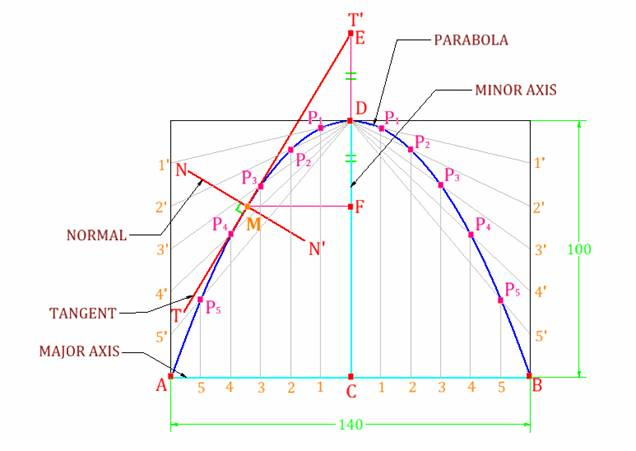
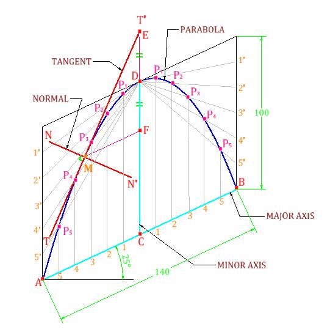
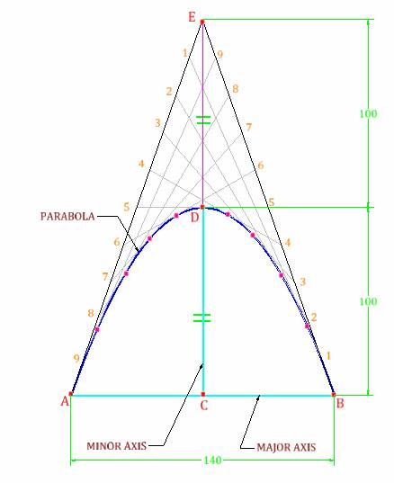

Example 1.3– Construct a parabola by rectangle method with the base dimension 140 mm and height 100 mm. And also draw the tangent and normal to the parabola at any suitable point.
Procedure:
Step-1 Draw a horizontal major axis of the length 140 mm and give the notations A & B as shown in the figure. And mark a midpoint C on it.
Step-2 Draw a vertical axis, perpendicular to the horizontal axis & passing through the point C; of the length equal to the length of minor axis, which is 100 mm and give the notations C & D as shown in the figure.
Step-3 Then make a rectangle of the sides 140mm X 100mm, passing through the end points of the major and minor axes i.e., ABCD, as shown in the figure
Step-4 Divide the major axis AB into 12 equal divisions and give the notations as 1, 2, 3 etc. as shown in the figure. And also divide the two vertical sides passing through the point A & B, into 6 equal divisions and give the notations as 1',2',3',4' etc. as shown in the figure.

Step-5 Now converge all the points 1', 2', 3', 4' etc. at the point D with straight lines. And from the points 1,2,3,4 etc. draw straight vertical lines such that the lines should intersect to the lines D1', D2', D3' etc. respectively, as shown in the figure. And give the notations as P1, P2, P3 etc. respectively as shown in the figure.
Step-6 Draw a smooth free hand medium dark curve passing through the points P1, P2, P3 etc. as shown in the figure on both sides of the minor axis; in sequence, so the resulting curve is the parabola.
Step-7 Now mark a point anywhere on the parabola; i.e., the point M, and from this point M draw a horizontal straight line intersecting with the line CD and give the notation as point F. Then extend the line CD in upward direction up to the length equal to DF and give the notation as the point E as shown in the figure. Then form the point E draw a straight line passing through the point M of some suitable length and at the ends give the notations T-T'. This is the tangent to the parabola then draw a line of some suitable length and passing through the point M, which is perpendicular to the previously draw tangent T-T' and give the notations N-N', this is normal on the parabola passing through the point M, as shown in the figure.
Step-8 Give the dimensions by any one method of dimensions and give the name of the components by leader lines wherever necessary.
Problem 1.4 – Construct a parabola by parallelogram method with the base dimension 140 mm and height 100 mm. The base of the parabola makes an angle of 25° with the horizontal. And also draw the tangent and normal to the parabola at any suitable point.
Procedure:
Step-1 Draw a horizontal line of some length and then draw a major axis inclined at an angle of 25° with the previously drawn horizontal line, of the length 140 mm and give the notations A & B as shown in the figure. And mark a midpoint C on it.

Step-2 Draw a vertical axis, perpendicular to the horizontal line& passing through the point C; of the length equal to the length of minor axis, which is 100 mm and give the notations C & D as shown in the figure.
Step-3 Then make a rectangle of the sides 140mm X 100mm, passing through the end points of the major and minor axes i.e., ABCD, as shown in the figure
Step-4 Divide the major axis AB into 12 equal divisions and give the notations as 1, 2, 3 etc. as shown in the figure. And also divide the two vertical sides passing through the point A & B, into 6 equal divisions and give the notations as 1',2',3',4' etc. as shown in the figure.
Step-5 Now converge all the points 1', 2', 3', 4' etc. at the point D with straight lines. And from the points 1,2,3,4 etc. draw straight vertical lines such that the lines should intersect to the lines D1', D2', D3' etc. respectively, as shown in the figure. And give the notations as P1, P2, P3 etc. respectively as shown in the figure.
Step-6 Draw a smooth free hand medium dark curve passing through the points P1, P2, P3 etc. as shown in the figure on both sides of the minor axis; in sequence, so the resulting curve is the parabola.
Step-7 Now mark a point anywhere on the parabola; i.e., the point M, and from this point M draw a horizontal straight line intersecting with the line CD and give the notation as point F. Then extend the line CD in upward direction up to the length equal to DF and give the notation as the point E as shown in the figure. Then form the point E draw a straight line passing through the point M of some suitable length and at the ends give the notations T-T'. This is the tangent to the parabola. Then draw a line of some suitable length and passing through the point M, which is perpendicular to the previously draw tangent T-T' and give the notations N-N', this is normal on the parabola passing through the point M, as shown in the figure.
Step-8 Give the dimensions by any one method of dimensions and give the name of the components by leader lines wherever necessary.
Example 1.5 – Construct a parabola by tangent method with the base dimension 140 mm and height 100 mm.
Procedure:
Step-1 Draw a horizontal major axis of the length 140 mm and give the notations A & B as shown in the figure. And mark a midpoint C on it.
Step-2 Draw a vertical axis, perpendicular to the horizontal axis & passing through the point C; of the length equal to the length of minor axis, which is 100 mm and give the notations C & D as shown in the figure. Like in the same way extend the line CD as DE of the length equal to 100 mm, as shown in the figure.
Step-3 Then connect the point E with the points A & B by straight inclined lines as shown in the figure. And divide these two lines AE & BE in to 10 equal divisions. Now give the notations on these points as 1,2,3 etc. but in opposite manner as shown in the figure.
Step-4 Connect these points 1-1, 2-2, 3-3 etc. by straight lines as shown in the figure.

Step-5 Draw a smooth free hand medium dark curve starting from the point A and intersecting the lines 1-1, 2-2, 3-3 etc. by tangent and ending at the point B as shown in the figure. This is the required parabola.
Step-6 Give the dimensions by any one method of dimensions and give the name of the components by leader lines wherever necessary.